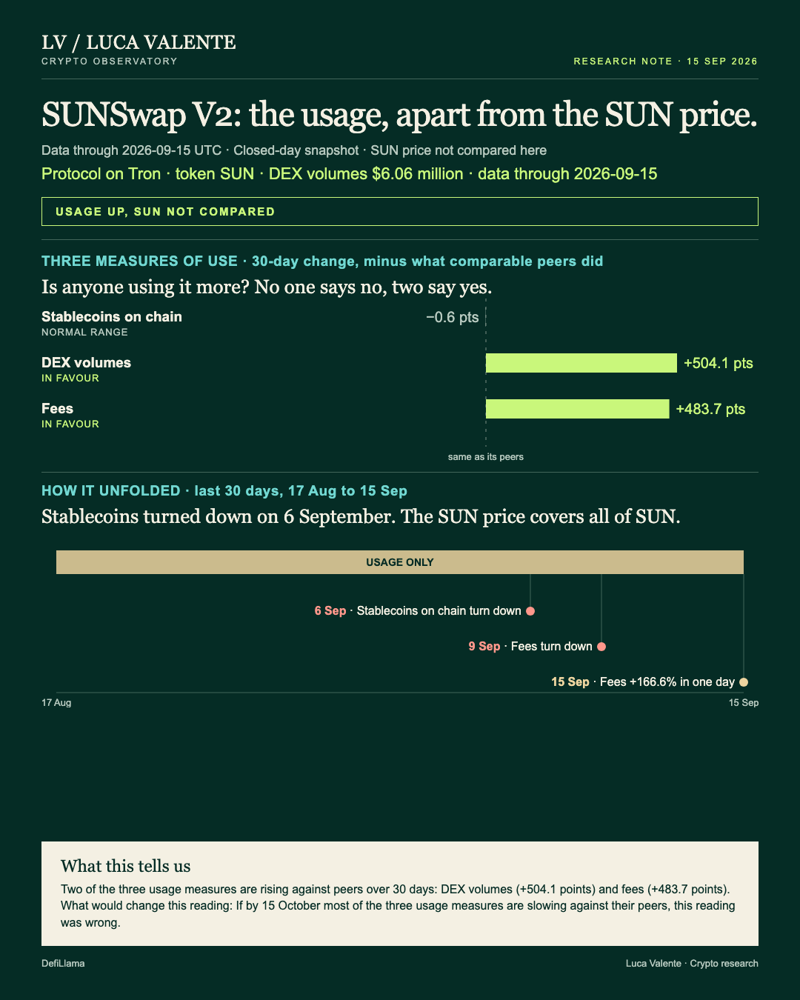
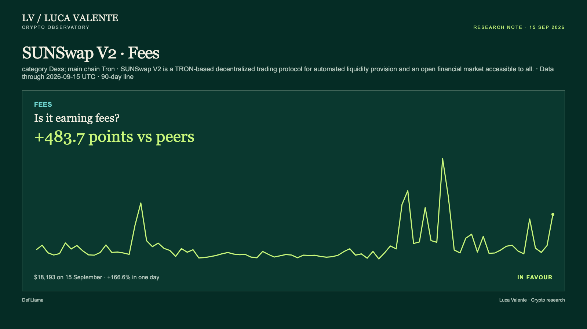
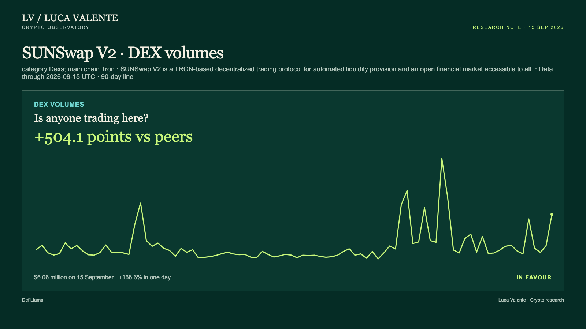

Training note, written on 23 September 2026 from data as of 15 September 2026. Not part of the published series.
SUNSwap V2: Trading And Fees Outrun Stablecoins

Two of SUNSwap V2's usage lines jumped together. A third, the one that tracks money sitting on Tron, barely moved. That difference between trading and holding is worth checking before anyone calls this a trend.
SUNSwap V2 is one version of SUNSwap, an exchange built on the Tron blockchain. People swap tokens there directly with each other. This note stays on usage; it doesn't weigh in on price. The token that trades under the ticker SUN belongs to all of SUNSwap, not to this version alone. That's why its price isn't compared to this version's numbers here.
On 15 September, DEX volumes on SUNSwap V2 came to $6.06 million, up 166.6% from the day before. Fees moved the same way that day: $18,193, also up 166.6% in a day.
Over the 30 days that end on 15 September, DEX volumes are up 827.9%. The peer median for the group, Dexs, is 323.8%. SUNSwap V2 is running 504.1 points ahead of that middle. Fees over the same stretch are up 827.7%, against a peer median of 344.0%. That's a difference of 483.7 points.
All three comparisons sit inside the same peer group, Dexs. The medians come from different counts of exchanges: 17 for fees, 25 for stablecoins, 27 for volumes.
Ninety days of fees ranged from $1,961, on 16 August, to $38,557, on 27 August. The 15 September reading, $18,193, sits between the two.

Money parked on the chain, measured in stablecoins, tells a different story. The balance sat at $94.56 billion on 15 September, flat from a day earlier. Over 30 days it's up 2.2%, against a peer median of 2.8%. That stablecoin line is running 0.6 points behind the median, not ahead. That's the number that doesn't fit. Trading and fees are surging against peers. Money on the chain isn't growing any faster than everyone else's.

In dollar terms, DEX volumes aren't extreme: the 90-day range runs from $653,563, on 16 August, to $13 million, on 27 August. The $6.06 million reading on 15 September sits inside that band, not at either edge.
Order matters here. Stablecoins were the first to turn, heading down on 6 September. They fell on 7 of the next 10 days. Fees turned three days later, on 9 September, falling on 4 of the 7 days since. DEX volumes turned the same day, falling on 4 of 7 days.
Jumps this size in DEX volumes aren't rare on this kind of exchange. Since September 2025, the peer group has produced 246 one-day jumps at least this large, across 16 other protocols. SUNSwap V2 itself has had 18. A week out, 3 of those 18 were still at or above the level of the day of the move. A month out, none of the 16 held that level. The group did little better at a month: 37 of 225 held.
Nothing here is unique to SUNSwap V2. 16 of the other 24 exchanges in today's group have had a jump this size too. With the fade record this one-sided, one jump doesn't say much about where volumes settle next.
Several things aren't in this reading. I don't have a value-locked number for this version of SUNSwap here, and I don't have a commit history to check either. Rollup transaction counts don't apply to SUNSwap V2, which isn't one. There's no user or wallet count, just fees, stablecoins, and volumes (three lines, and I'd want a fourth); that's what usage means in this piece. Nothing I can see explains why 15 September moved the way it did. I'm not going to guess.
Everything here comes down to one test. If by 15 October most of the three usage measures are slowing against their peers, this reading was wrong. I have nothing after 15 September. That test is still open.
My read is one strong day, not a new pace. The fade record backs that.
Source: DefiLlama.
Peer group: 27 exchanges tracked by DefiLlama. 'Net of the group' is the 30-day change minus the group's median.
Not financial advice. This is a research note based on public on-chain data.